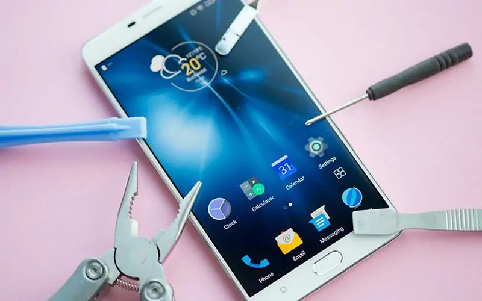
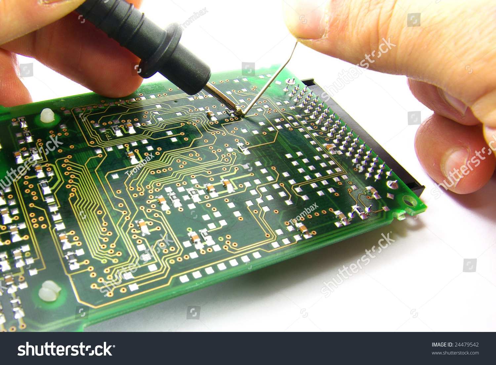
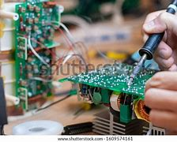
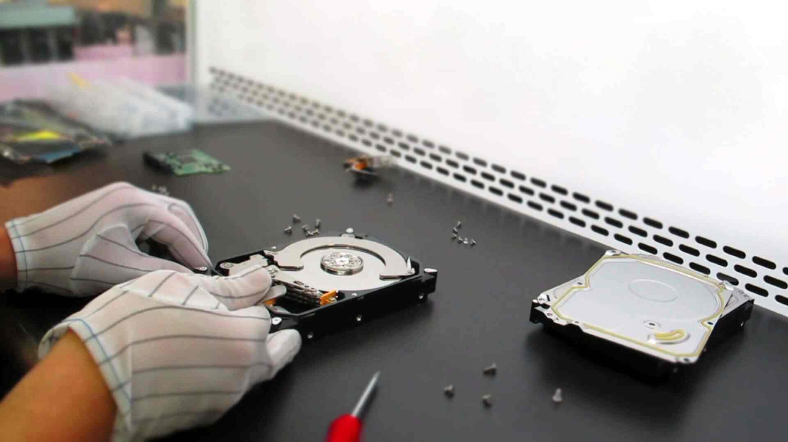

| Smartphone Refurbishment |
Comprehensive repair and restoration of used smartphones, including screen replacements, battery upgrades, and software optimization. |
 |
| Laptop Component Recovery |
Detailed dismantling of laptops to recover valuable components like CPUs, memory, and storage drives, ensuring data security and reuse. |
 |
| Circuit Board Recycling |
Advanced processing of circuit boards to extract precious metals and rare earth elements, minimizing environmental impact. |
 |
| Industrial Electronics Disposal |
Safe and compliant disposal of large-scale industrial electronics, including machinery control systems and networking equipment. |
 |
| Data Center Decommissioning |
Complete decommissioning services for data centers, including server dismantling, data erasure, and responsible disposal of all electronic assets. |
|